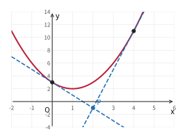
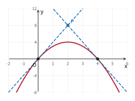
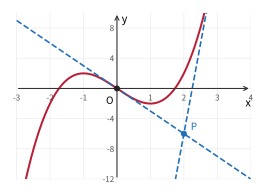

ホーム ＞ 数学II ＞ 微分法（接線・増減・極値）
別冊練習問題 2 の解答 曲線外の点を通る接線
(1) 点 \(P(2,\ -1)\) から曲線 \(y=x^{2} - 2 x + 3\) にひいた接線の方程式をすべて求めよ。
接点を \((t,\ f(t))\) とおく
\(f'(x)=2 x - 2\) より、接点 \(\left(t,\ f(t)\right)\) での接線は
\[y-t^{2} - 2 t + 3=2 t - 2\left(x-t\right)\]\[y=- t^{2} + x \left(2 t - 2\right) + 3\]点 \(P\) を通る条件
\(x=2,\ y=-1\) を代入する。
\[-1=- t^{2} + 4 t - 1\]\[- t^{2} + 4 t=0\]\(t\) を求める
\[- t \left(t - 4\right)=0\ \Rightarrow\ t=0,\ 4\]接線の方程式
\(t=0\) のとき \(y=- 2 x + 3\)
\(t=4\) のとき \(y=6 x - 13\)

【答案】
\[y=- 2 x + 3,\ y=6 x - 13\]答
(2) 点 \(P(2,\ 8)\) から曲線 \(y=- x^{2} + 4 x\) にひいた接線の方程式をすべて求めよ。
接点を \((t,\ f(t))\) とおく
\(f'(x)=- 2 x + 4\) より、接点 \(\left(t,\ f(t)\right)\) での接線は
\[y-- t^{2} + 4 t=- 2 t + 4\left(x-t\right)\]\[y=t^{2} + x \left(- 2 t + 4\right)\]点 \(P\) を通る条件
\(x=2,\ y=8\) を代入する。
\[8=t^{2} - 4 t + 8\]\[t^{2} - 4 t=0\]\(t\) を求める
\[t \left(t - 4\right)=0\ \Rightarrow\ t=0,\ 4\]接線の方程式
\(t=0\) のとき \(y=4 x\)
\(t=4\) のとき \(y=- 4 x + 16\)

【答案】
\[y=4 x,\ y=- 4 x + 16\]答
(3) 点 \(P(2,\ -6)\) から曲線 \(y=x^{3} - 3 x\) にひいた接線の方程式をすべて求めよ。
接点を \((t,\ f(t))\) とおく
\(f'(x)=3 x^{2} - 3\) より、接点 \(\left(t,\ f(t)\right)\) での接線は
\[y-t^{3} - 3 t=3 t^{2} - 3\left(x-t\right)\]\[y=- 2 t^{3} + x \left(3 t^{2} - 3\right)\]点 \(P\) を通る条件
\(x=2,\ y=-6\) を代入する。
\[-6=- 2 t^{3} + 6 t^{2} - 6\]\[- 2 t^{3} + 6 t^{2}=0\]\(t\) を求める
\[- 2 t^{2} \left(t - 3\right)=0\ \Rightarrow\ t=0,\ 3\]接線の方程式
\(t=0\) のとき \(y=- 3 x\)
\(t=3\) のとき \(y=24 x - 54\)

【答案】
\[y=- 3 x,\ y=24 x - 54\]答